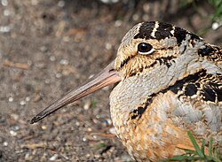

Birds of the World
Written by Finch Goldfeather
Posted: 12 May 2018
Learn about this cool bird.
Woodcock
The woodcocks are a group of eight very similar living species of sandpipers in the genus Scolopax. The genus name is Latin for a snipe or woodcock, and until around 1800 was used to refer to a variety of waders. The English name is first recorded in about 1050. According to the Harleian Miscellany, a group of woodcocks is called a "fall".

(Just like how I would fall for this cutie if I saw one in person!)
Appearance
Woodcocks have stocky bodies, cryptic brown and blackish plumage, and long slender bills.
Their eyes are located on the sides of their heads, which gives them 360° vision.
(All the better to see you with!)
Unlike in most birds, the tip of the bill's upper mandible is flexible.

(You know what they say about early birds...)
As their common name implies, the woodcocks are woodland birds. (who could have guessed?) They feed at night or in the evenings, searching for invertebrates in soft ground with their long bills. This habit and their unobtrusive plumage makes it difficult to see them when they are resting in the day.

(He's trying his best, okay?)
Behavior
American woodcocks occasionally perform a rocking behavior where they will walk slowly while rhythmically rocking their bodies back and forth. This behavior occurs during foraging, leading ornithologists such as Arthur Cleveland Bent and B. H. Christy to theorize that this is a method of coaxing invertebrates such as earthworms closer to the surface. The foraging theory is the most common explanation of the behavior, and it is often cited in field guides. This theory is complicated by observations of rocking while slowly walking across ground that cannot be foraged, such as hard roads or deep snow.
Therefore I propose an alternate theory:
the woodcock likes to boogie.